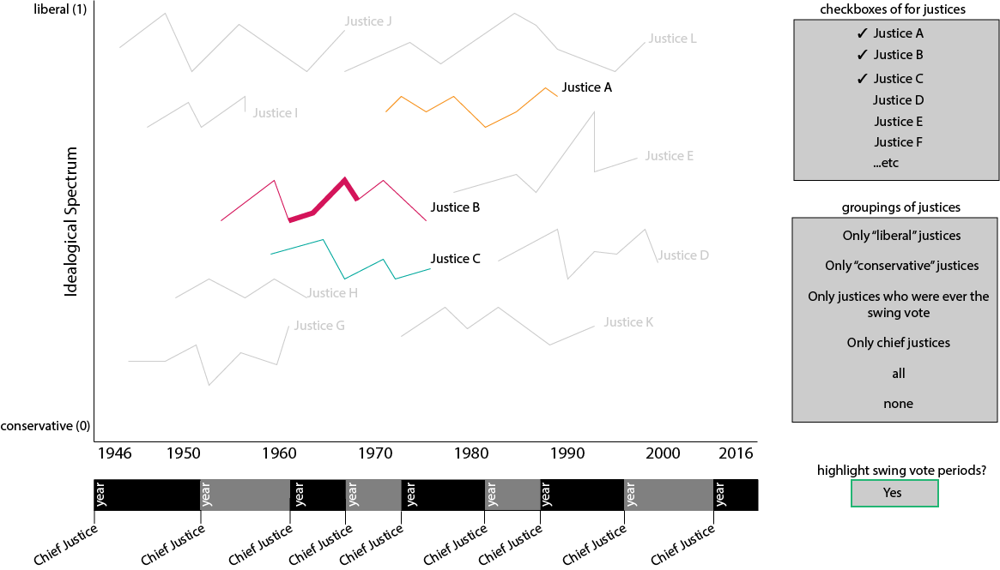
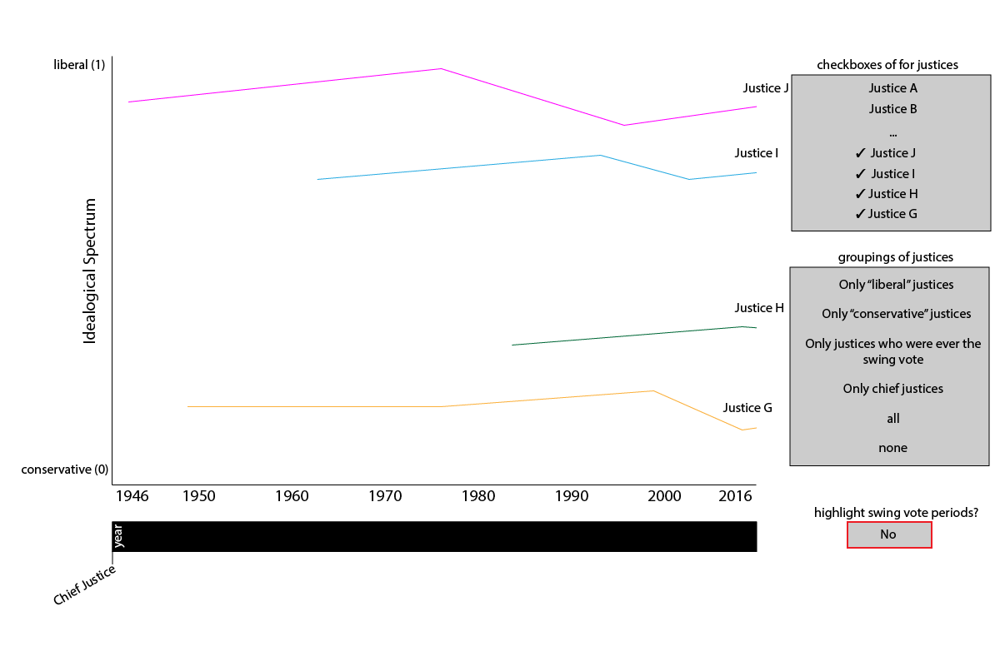

Multi-Series Line Graph
Questions that can be answered:
- Which justices votes predominantly liberal or conservative?
- How do justices' votes change over time?
- Were certain court eras (chief justice reigns) more liberal or conservative?
- Does being the swing vote affect a justice's voting behavior?
Sketch: View 1

View 1 shows swing votes enabled, 3 justices checked, and the entire time frame
Sketch: View 2

View 2 shows swing votes disabled, 3 justices checked, and the time frame of one chief justice
Implemented Interactions
- Change the time span with the timeline below the graph (either through drag-selecting an area, or by clicking on a justice)
- Select which justices are shown and fade the others (either individually or in broader groups) to make it easier to see individual justices amongst the clutter
- Toggle "swing votes", which will highlight (and/or increase the stroke size of) a justice's line during the periods of time in which they are the swing vote.
- Hover over a justice's line to see their number of decisions as well as thexact conservative/liberal value, in a given year
Concrete example:
- The user will initially be presented with the line chart that has all of the justices selected, and swing votes deselected, for the entire time frame
- If the user selects one of the justice groupings, all the justices will ade out except for the ones in that group
-
- Instead of using the groupings, if the user selects individual justices, those selected justices will be shown clearly and the deselected ones will be faded
- The user can change the time frame by clicking and dragging on the timeline with chief justices below the graph. Ideally, they will also be able to click on one chief justice in order to zoom in to only their time frame. When they have changed the timeframe, the graph will zoom in on the x axis accordingly, showing only that timeframe.
- When "swing vote" is checked, the graph will update so that during the period of time where a justice was a swing vote, their line is highlighted/thickened
Proposed impementation path:
- Start with the multi-series line graph we already have
- Hard-code the data for chief justice years in that position
- Add the timeframe-changing functionality by adapting code from a brush-and-zoom graph
- Adding the checkbox functionality (already started in the prototype)
- Create groupings of justices, and implement checkbox functionality
- With the swing vote data from sorenson, use clipped paths to highlight the area where there is a swing vote present. An example of using clipping paths to change a graph can be found here